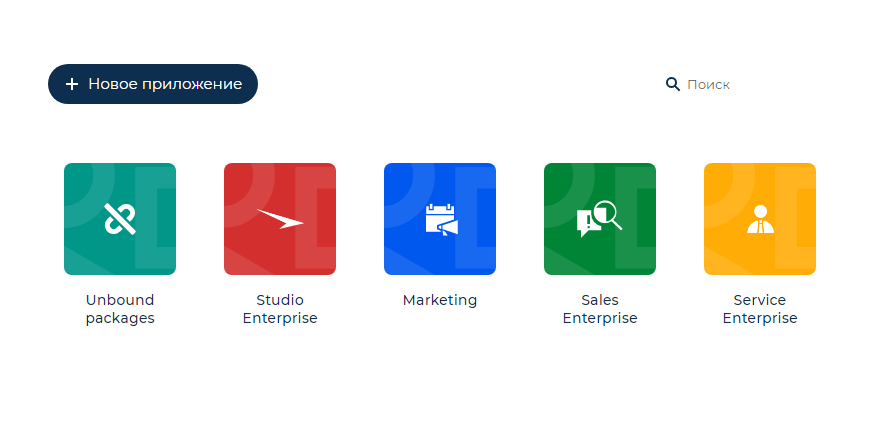
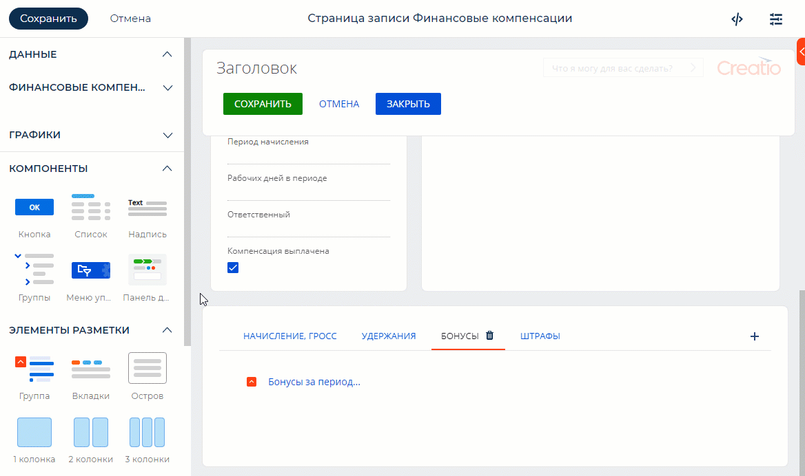

Представляем обзор изменений и улучшений, реализованных в Creatio версии 8.0 Atlas.
Creatio 8.0 Atlas — это новый уровень развития платформы, который позволит лидерам бизнес- и операционных подразделений еще легче и быстрее адаптировать систему под решение любых бизнес-задач с максимальным уровнем свободы благодаря новому набору no-code инструментов.
Инструкция по обновлению для приложений on-site доступна в отдельной статье.
No-code платформа
В Creatio реализован новый подход к кастомизации и выделен уровень с функциональными блоками, направленными на решение бизнес-задач — приложениями. Приложения становятся основной единицей no-code разработки в Creatio. Например, приложением может быть набор инструментов для управления заявками в Creatio или дополнение для представления реестра в виде канбан-доски. Приложение может состоять из одного или нескольких пакетов с наполнением.
Центр приложений
Мы презентуем абсолютно новое решение для совместной работы над дизайном приложений — центр приложений. Здесь вы сможете работать над расширением и дополнением приложений вместе с коллегами в режиме совместного редактирования.
Центр приложений Creatio хранит информацию об облачных средах различного назначения, а также помогает ускорить работы по прототипированию и разработке приложений. Клиенты, чьи продуктивные среды развернуты в облаке, получат письма с приглашением к использованию центра приложений и смогут приступить к работе после обновления до версии 8.0 Atlas. Клиенты, чьи продуктивные среды развернуты on-site, а также те, кто еще не использует Creatio, смогут зарегистрироваться в центре приложений в несколько кликов. Чтобы зарегистрировать организацию в центре приложений Creatio и приступить к работе достаточно заказать тест-драйв любого продукта Creatio. Когда учетная запись будет добавлена, вы получите возможность создавать и настраивать приложения или сможете ознакомиться с комплексными решениями для маркетинга, продаж и сервиса, интегрированными в единую no-code платформу.
Ключевые функциональные возможности центра приложений Creatio:
- Создавайте приложения любой сложности в no-code дизайнере: добавляйте процессы, интеграции и настраивайте пользовательские интерфейсы, используя drag-and-drop и интерактивные подсказки.
- Организуйте эффективное взаимодействие команды на этапе настройки и тестирования дополнений в единой среде для аналитиков и разработчиков. Для каждого сотрудника организации будут доступны все среды, на которых выполняются работы, и реализованные решения.
- Приглашайте коллег для совместной работы в центре приложений в несколько кликов. Пользователи из одной компании в приложении объединяются в организацию.
Приглашение пользователей в команду
-
Определяйте права членов команды при помощи ролей:
- Администратор имеет полный доступ ко всем средам компании и права на управление ими. Отвечает за управление учетными записями пользователей, которые входят в организацию.
- Разработчик имеет полный доступ к средам разработки и тестирования, а также тест-драйвам, зарегистрированным сотрудниками организации.
- Сформируйте единую библиотеку используемых в компании сред, чтобы упорядочить работы по кастомизации вашего сайта. В перечне сред отобразятся как текущие облачные среды вашей компании, так и тест-драйвы, заказаные участниками организации. Для каждой среды будет показан ее текущий статус.
- Перемещайтесь между средами вашей организации в несколько кликов без ввода логина и пароля. Для этого используется функциональность Creatio ID, основанная на механизме SSO. После создания учетной записи в центре приложений вы получаете возможность переходить на любой сайт организации согласно своим правам доступа. При входе на сайт будет автоматически создана учетная запись пользователя, связанная с основной учетной записью в центре приложений.
Управление приложениями
Управление жизненным циклом приложений
Обновлен раздел управления приложениями Центр приложений:
-
Перейти к разделу можно в два клика.
Быстрый переход к разделу Центр приложений -
Полностью обновлен интерфейс раздела.
-
Все установленные и созданные пользователем приложения отображаются в виде плиток.
-
В разделе отображаются не только пользовательские дополнения и расширения, но и базовые приложения, из которых состоит Creatio.
-
Реализовано отображение пакетов, которые не привязаны ни к одному приложению.
Новый интерфейс раздела Центр приложений -
-
Из раздела можно перейти к созданию или редактированию приложения, а также установке готового решения с Marketplace или из файла.
Создание приложения из раздела Центр приложений
No-code дизайнер
Создавать собственные приложения стало быстрее и проще. Для этого в Creatio реализован новый инструмент — no-code дизайнер, который объединил в едином окружении все шаги настройки пользовательских решений, от прототипа до готового приложения. В новом дизайнере вам доступны все преимущества нового UI-фреймворка Freedom UI: удобные шаблоны, гибкие настройки дизайна и автоматическая установка зависимостей.
-
Приложения могут включать:
- различные пользовательские интерфейсы;
- бизнес-процессы;
- динамические кейсы;
- интеграции с пользовательскими REST и SOAP сервисами;
- другие типы схем, которые являются частью конфигурации системы: объекты, привязки данных, SQL-скрипты и т.д.
-
При создании приложения вы можете выбрать шаблон, наиболее подходящий для вашего решения: раздел с данными и бизнес-процессами, домашнюю страницу или пустой шаблон.
- Вместе с приложением автоматически создается пакет, в который сохраняется вся разрабатываемая функциональность, что существенно ускоряет настройку.
- При работе с дизайнерами объектов, Freedom UI интерфейсов, бизнес-процессов, кейсов все необходимые зависимости добавляются в приложение автоматически.
- При сохранении приложения реализовано автоматическое определение необходимого пакета. Если приложение не содержит доступных пакетов, в которые возможно поместить изменения, то в рамках приложения будет автоматически создан новый пакет.
- При редактировании приложения, созданного в Freedom UI, вы можете задать общую информацию: название, описание, иконку.
- При редактировании приложений вы можете непосредственно из дизайнера перейти в мастер разделов для настройки страниц, созданных в версии Creatio 7.18.5 и ниже.
Freedom UI дизайнер
Реализован новый UI-фреймворк с библиотекой компонентов Freedom UI, который позволяет создавать страницы, адаптированные для отображения на различных экранах и типах устройств. Для настройки страниц в новом фреймворке добавлен новый Freedom UI дизайнер. Он позволяет настраивать пользовательские интерфейсы любой структуры без ограничений по расположению элементов на холсте. Дизайнер имеет интуитивный интерфейс и открывает широкие возможности кастомизации.
-
Для ускорения настройки реализованы шаблоны страниц, которые вы можете добавить в приложение:
- страница с вкладками и островами слева;
- страница с вкладками и островами справа;
- страница с вкладками и островом сверху;
- страница с островами слева;
- страница с сеткой;
- домашняя страница;
- страница с реестром;
- пустая страница.
Добавление страницы в No-code дизайнере -
Кроме полей, вкладок и островов для настройки интерфейсов в дизайнере доступны новые инструменты:
- надпись — обозначает заголовки отдельных секций или островов на странице;
- группа — объединяет элементы на странице;
- колонки — объединяют элементы в блоки с фиксированной разметкой;
- гибкая строка и гибкая колонка — объединяют элементы в горизонтальном или вертикальном направлении без разметки;
- список — добавляет на страницу перечень записей другого объекта (реестр) согласно настроенным фильтрам;
- дерево групп — позволяет настроить иерархию групп с фильтрами для сегментации записей на странице;
- меню управления группами — позволяет управлять видимостью групп, а также отображает выбранную группу, если дерево на странице скрыто;
- панель действий — отображение шагов кейса и подчиненных им задач, которые необходимо выполнять в рамках решения бизнес-задачи.
Вы можете управлять поведением и внешним видом элементов на панели настроек, которая открывается при выделении элемента на холсте.
- Страницы приложения могут работать с одним или несколькими источниками данных. Например, для страницы записи источником данных является конкретный объект. Источник данных добавляется автоматически в момент создания приложения, а при настройке страницы приложения вы можете добавить как существующий источник, так и создать новый.
-
В справочных полях вы можете настроить для пользователя следующие возможности:
- перейти в раздел или справочник, данные которого используются в поле;
- добавлять новые значения непосредственно в поле.
- Для полей ввода можно настроить отображаемый текст (placeholder), например, с подсказкой по заполнению данного поля или необходимым форматом ввода данных.
- В шапку элемента “Группа” можно добавлять различные компоненты, например, кнопки или надписи. Это расширяет возможности создания сложных компонентов, например, можно разместить внутри группы список и кнопки управления данными этого списка или дополнительные действия.
Пример настройки группы
-
Появилась возможность настраивать отображение реестров в разделе и на страницах записей:
-
работать с фильтрами и группами;
-
настраивать статическую фильтрацию;
-
закреплять или скрывать колонки;
-
отображать данные справочных полей в виде гиперссылок;
- сортировать записи по клику на заголовок колонки.
-
-
Вы можете добавлять на страницы Freedom UI кнопки и управлять действиями, которые будут происходить по их нажатию. Кроме стандартных действий по сохранению и отмене изменений или закрытию страницы вы также можете выбрать:
- Открыть новую страницу — открывает страницу создания новой записи указанного объекта. Действие доступно только объектам, для которых существует раздел или деталь со страницей записи. Еще вы можете настроить перечень полей, которые должны быть предзаполнены в новой записи, и задать для них значения.
- Открыть существующую страницу — открывает определенную страницу Creatio по уникальному идентификатору.
- Открыть произвольную страницу — позволяет открыть определенную страницу Creatio, реализованную в Freedom UI и не привязанную к текущему разделу или детали. После выбора страницы, которую необходимо открыть, рядом с полем отображается кнопка быстрого перехода к редактированию указанной страницы.
- Запустить процесс — позволяет инициировать запуск указанного при настройке кнопки бизнес-процесса. Вы можете перейти к созданию нового процесса или редактированию выбранного непосредственно из панели настройки кнопки.
- В заголовках кнопок можно использовать иконки. Вы можете добавить изображение к тексту кнопки или отобразить только иконку, чтобы не перегружать дизайн.
Пример настройки кнопки
-
Чтобы вы могли создавать более сложные интерфейсы, которые соответствуют стилю вашей компании, в свойства колонок, гибкой строки и гибкой колонки добавлены возможности:
- управлять цветом фона,
- задавать параметры скруглений,
- настраивать отступы между элементами,
- управлять количеством колонок, в которых будут размещаться элементы на странице.
Интеграции
Синхронизация календарей Exchange
- На мини-карточку и на страницу активности в Creatio добавлена кнопка подключения к сервисам online встреч (Microsoft Teams, Zoom, Cisco Webex, Join.Me, AnyMeeting, GoToMeeting, Google Meet).
Переход к встрече из мини-карточки активности
Администрирование
Сервер кэширования
- Прекращена поддержка устаревшей отказоустойчивой конфигурации Redis Sentinel. Перед обновлением на версию Creatio 8.0 Atlas необходимо установить и настроить Redis Cluster — более современный механизм обеспечения отказоустойчивости хранилищ Redis. Подробнее: Настроить Redis Cluster.
Логирование изменений
- Появилась возможность логировать изменения внешних связей между объектами на диаграмме взаимосвязей, например, между контактами и контрагентами.
Права доступа
- Реализована автоматическая раздача прав всем пользователям на чтение колонок, добавленных при кастомизации объектов, для которых настроено администрирование по колонкам.
- Добавлена возможность ограничивать автоматическое делегирование прав доступа для определенных ролей.
Безопасность
Защита данных доступа
- Реализована возможность хранения в Vault ключей и других данных подключений, например, паролей к базе данных, Redis, S3, Message broker.
Производительность
Выполнение фоновых задач
- Ускорено выполнение фоновых задач бизнес-процессов благодаря оптимизации распределения задач между обработчиками.
Хранение временных данных
- Оптимизировано хранение временных данных, которые используются во время выполнения процессов. Это позволило сократить занимаемый ими объем памяти на 80%. В версии 8.0 Atlas функциональность доступна в режиме бета-тестирования. Чтобы оценить новые возможности хранения временных данных, запросите включение функциональности в службе технической поддержки. Будем благодарны за обратную связь. В открытом доступе функциональность появится уже в ближайших релизах.
Инструменты разработки
Перенос изменений
- При создании нового пакета по умолчанию создается пакет-сборка. Это позволяет быстрее и удобнее переносить изменения между средами.
- Реализована возможность изменять признак Компилировать в отдельную сборку для существующих пакетов. Эта возможность упрощает конвертацию простых пакетов в пакеты-сборки. При создании нового пакета в разделе Конфигурация теперь по умолчанию устанавливается признак Компилировать в отдельную сборку.
Создание страниц Freedom UI
- В разделе Конфигурация появилась возможность создавать страницы Freedom UI, используя список преднастроенных шаблонов.
-
В схемах страниц Freedom UI появилась возможность добавлять обработчики запросов, валидаторы и конверторы данных. С помощью этих инструментов можно реализовать широкий набор бизнес-логики, например:
- управление видимостью элементов,
- блокировку элементов,
- обязательность заполнения полей,
- фильтрацию в полях,
- автоматическое заполнение полей,
- обращение к данным Creatio,
- отправку http-запросов
- переходы по страницам.
Кроме того, есть возможность выстраивать обработчики запросов в цепочки выполнения, например, чтобы по запросу сохранения записи сначала отработал базовый обработчик сохранения, а потом выполнилась пользовательская логика страницы.
CRM-решения
Инструменты маркетинга
Регистрация участников мероприятия
- Добавлена поддержка передачи данных о регистрации контакта на мероприятие непосредственно из кода посадочной страницы. В случаях, когда уникальный идентификатор мероприятия указан в коде страницы, он будет иметь приоритет перед настроенными в записи лендинга значениями по умолчанию.
Лидогенерация LinkedIn
- Реализована обработка ошибок доступа к сервису лидогенерации LinkedIn. При возникновении ошибки подключения или работы сервиса пользователь получит уведомление с описанием ошибки и рекомендациями по ее устранению.
Инструменты продаж
Страница продажи
- Обновлен профиль продажи, содержащий информацию о настроении менеджера, предиктивной вероятности успешного завершения продажи и количестве дней, в течение которых продажа находится в воронке продаж.
Обновленный профиль продажи
Мобильное приложение
Работа с порталом
- Появилась возможность работать в offline-режиме: создавать и просматривать обращения, сохранять сообщения в переписке. После восстановления соединения все сделанные изменения будут загружены в Creatio.
- Ускорена работа мобильного приложения Creatio за счет кэширования данных в offline-режиме.
- Добавлен поиск обращений по номеру и описанию.
- У пользователей портала появилась возможность самостоятельно настраивать реестр в разделе Обращения.
Настройка реестра в мобильном приложении
Администрирование мобильного приложения
- Появилась возможность включить логирование для отладки мобильного приложения. В этом случае в основном приложении Creatio будет доступна информация обо всех ошибках и предупреждениях, которые возникают у сотрудников вашей компании на различных устройствах. Для включения логирования обратитесь в техническую поддержку Creatio.